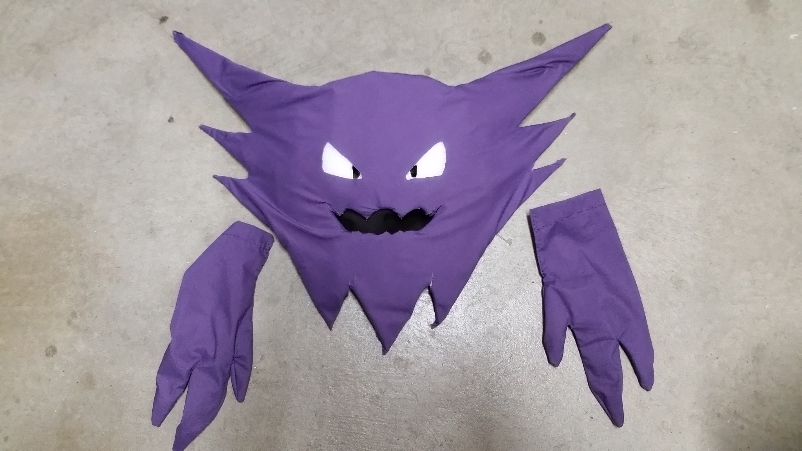
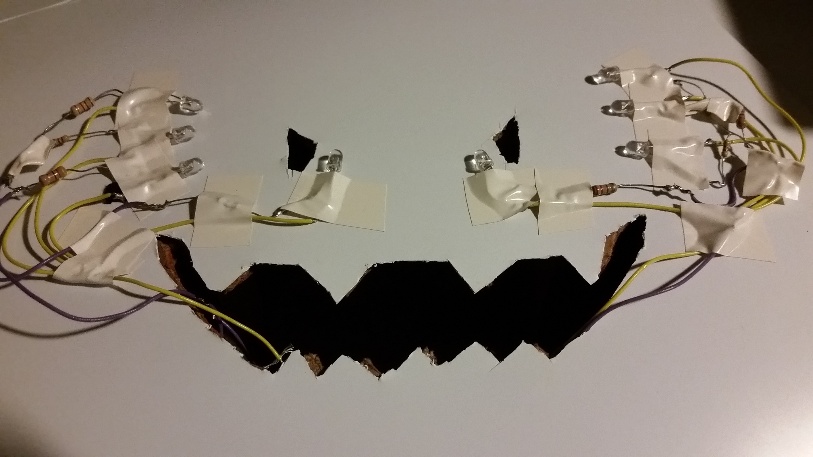

Body
Halloween Mask and Gloves
Using some cardboard, PVC sheet, foam, fabric, and lots of tape, I added a simple LED array
to create my Halloween costume. The character, Haunter, is stylized as a cartoonish ghost, which made it easier
to accept ragged/rough cuts in the fabric and to pull off the overall look.


Unfortunately, I did not properly align the LEDs and fabric eye openings, so there appears to be
some extra glow outside of the eyes. The LEDs were powered by 3V, which was enough.

Finally, I soldered some more LEDs for a simple light effect on a pair of gloves. Given more time,
I would have hoped to make the entire glove and mask uniformly glow, but I was satisfied with the result.